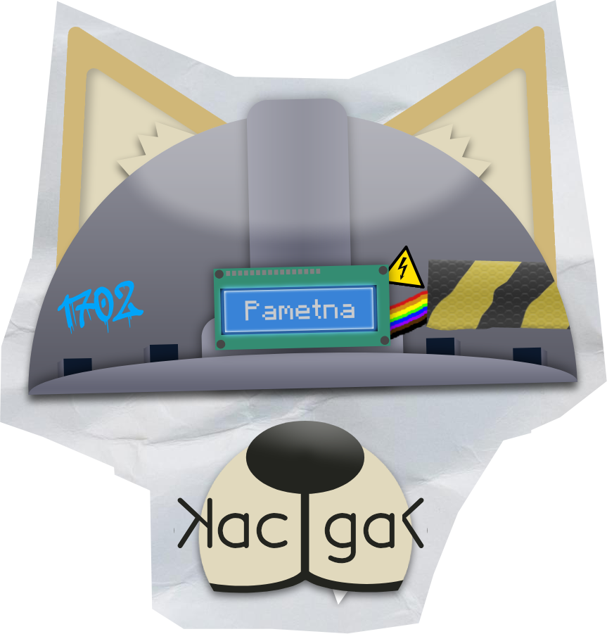

Pametna Kaciga
Pametna kaciga je inovativni projekat razvijen sa ciljem unapređenja bezbednosti i komunikacije u svakodnevnim i rizičnim situacijama. Namenjena je upotrebi u saobraćaju, građevinarstvu i drugim zahtevnim okruženjima.
Za razliku od klasičnih kaciga, ovaj prototip koristi glasovne komande, svetlosnu signalizaciju i vizuelni prikaz informacija, čime omogućava jednostavniju i bezbedniju interakciju bez korišćenja ruku.
Tim i realizacija
Projekat su realizovali učenici Elektrotehničke škole „Nikola Tesla” u Nišu: Miloš Živković, Petar Jevtić i Aleksa Ćirić, uz mentorstvo nastavnice Jovane Vučić Šubarević.
Kako funkcioniše
Sistem je zasnovan na Arduino platformi i koristi kombinaciju elektronskih komponenti za komunikaciju sa korisnikom. Glasovne komande pokreću različite funkcije poput osvetljenja, signalizacije i prikaza statusa na LCD displeju.
Kaciga reaguje na unapred definisane komande kao što su uključivanje, isključivanje i poziv za pomoć, čime omogućava brzu reakciju u kritičnim situacijama.
Glavne komponente
- Arduino Nano mikrokontroler
- Voice Recognition Module V3
- LCD displej sa I2C adapterom
- RGB LED dioda
- Servo motori
- Power bank napajanje
- 3D štampani delovi (kućište i dekorativne uši)

Dizajn
Kućište i dodatni elementi kacige modelovani su u SolidWorks okruženju i izrađeni pomoću 3D štampe. Poseban vizuelni element predstavljaju „uši” koje služe kao indikator stanja i raspoloženja korisnika.
Primena
Saobraćaj
Vozači motocikala i bicikala mogu koristiti glasovne komande bez skidanja ruku sa upravljača, čime se povećava bezbednost tokom vožnje.
Građevinarstvo
Radnici mogu aktivirati svetlosne signale za upozorenje i komunicirati stanje bez dodatne opreme.
Podrška osobama sa invaliditetom
Kaciga omogućava upravljanje funkcijama putem glasa, bez potrebe za fizičkim interakcijama. LCD displej i signalizacija pružaju dodatnu pomoć u komunikaciji.
Komunikacija i izražavanje
Vizuelni elementi poput pokretnih „ušiju” i poruka na displeju omogućavaju neverbalnu komunikaciju i izražavanje emocija.

Rezultat
Razvijen je funkcionalan prototip koji uz minimalne resurse uspešno demonstrira ideju pametne kacige. Projekat pokazuje kako kombinacija jednostavnog hardvera i kreativnog pristupa može dovesti do praktičnog rešenja.

Buduća unapređenja
Planirano je unapređenje sistema korišćenjem ESP32 mikrokontrolera, koji bi omogućio povezivanje na internet, kreiranje web servera i naprednije upravljanje uređajem.
